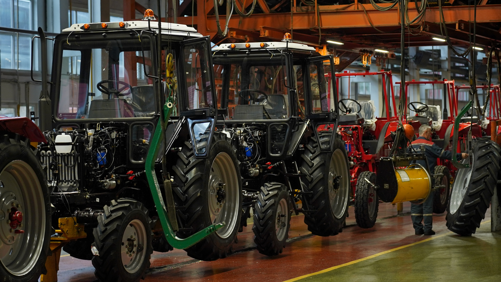
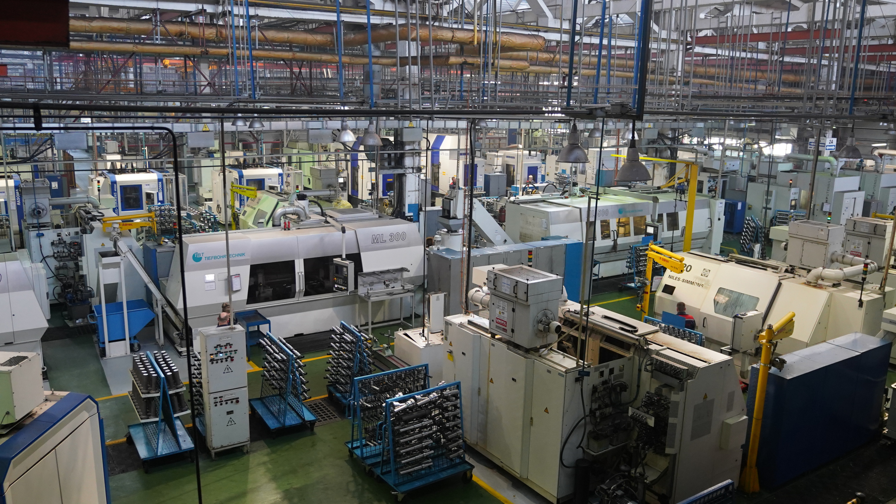

Корпус сборки
Корпус сборки тракторов – «сердце МТЗ». За этой расхожей фразой скрывается глубинный смысл производственных процессов, происходящих на предприятии. Все цеха – «организм» – работают на то, чтобы «сердце» – КСТ – билось. Равно как КСТ работает для того, чтобы завод жил. В корпусе сборки тракторов работают два конвейера: на одном собираются модели мощностью свыше 100 л. с., на втором – до 100 л. с. Сборка техники происходит узловым способом.Механические цехи
Механические цехи выполняют обработку деталей. На МТЗ работают механические цехи №1, 2, 4, 5 и 7, а также механосборочный цех №3 и цех малых серий. В МЦ-1 изготавливают коробки передач, в МЦ-4 – муфты сцепления, в МСЦ-3 – передний мост. Детали отправляют в МЦ-2, где собирают трансмиссии. На сегодняшний день самым технически оснащенным является МЦ-5, но это не значит, что остальные застыли в развитии: поэтапная модернизация затрагивает все технологические переходы.
